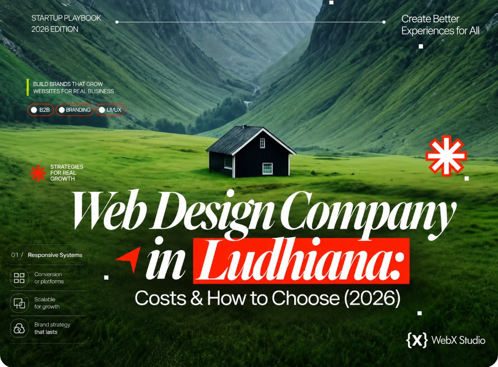

Website development company in Ludhiana, Punjab: how to choose the best one
Ludhiana runs on manufacturing, exports and family businesses - and almost none of them have a website that does their reputation justice. Here’s what website development costs in Ludhiana in 2026, which services you actually need, and how to pick the best development company for a site that ranks and converts.

Ludhiana is one of India’s hardest-working cities. Hosiery and textiles, bicycles and auto parts, machine tools, agricultural equipment - the “Manchester of India” exports to the whole world. Yet open most of these businesses’ websites and you’ll find slow, dated template pages that make a world-class manufacturer look like a corner shop. That gap is why choosing the right website development company in Ludhiana, Punjab matters more in 2026 than it ever has.
We’re Web{X} Studio, a design and development studio in Model Town, Ludhiana, serving clients across Punjab, India and abroad. This guide is the honest advice we’d give a friend across the table: which development services you actually need, what website development costs in Ludhiana, and the questions that separate the best web development company in Ludhiana from the cheapest one. If you already know you need a team, here’s our web development company in Ludhiana page with everything we build.
A professional business website from a Ludhiana studio in 2026 usually costs ₹20,000-₹1,50,000. A high-converting landing page starts around ₹20,000; ecommerce and custom builds run ₹3,00,000+. The best website development company in Ludhiana is the one with live, fast sites in its portfolio, a named in-house team, and SEO built in from day one - not the lowest quote.
Why Ludhiana businesses need a serious website in 2026
Three shifts have made a real website non-negotiable for Ludhiana’s manufacturers, exporters and service firms:
- Buyers research before they call. Whether it’s a European importer sourcing hosiery or a local customer choosing an interior designer, the first impression is your website - not your factory.
- Exports are won on trust. An overseas buyer comparing three Ludhiana suppliers will quietly favour the one whose site looks credible, loads fast and answers questions in clear English.
- Google is the new mandi. People search “website development company in Ludhiana,” “textile manufacturer Ludhiana,” “auto parts supplier Punjab” - and click the businesses that show up first and look the part.
Which development services does a Ludhiana business actually need?
“Website” covers very different jobs. The best development services are the ones matched to your goal, so start by knowing which of these you’re buying:
- Website design. Brand-led, custom layouts built around your products and buyers - the part people see and judge in three seconds.
- Website development. The build itself: clean code, fast hosting, a CMS you can edit, forms and integrations that work.
- Ecommerce development. Shopify, WooCommerce or custom stores for retail, D2C brands and B2B catalogues, with payments, shipping and GST invoicing set up properly.
- Web apps and portals. Dealer portals, order tracking, ERP dashboards and booking systems - common needs for Ludhiana’s manufacturers and distributors.
- Landing pages. Single-purpose pages for an ad campaign, product launch or lead funnel.
- SEO and maintenance. Technical SEO, local SEO, speed work, security updates and content edits after launch.
A good studio handles all of these under one roof, so design, code and search don’t get passed between three vendors who blame each other.
Website design company vs website development company in Ludhiana
You’ll see both terms used, often for the same firms. The difference is focus:
- A website design company in Ludhiana leads with visuals - branding, layout, user experience and how the site feels.
- A website development company in Ludhiana leads with engineering - performance, functionality, integrations and how the site works under load.
You need both. A beautiful site that takes six seconds to load loses the visitor; a fast site that looks generic loses the sale. Ask any Ludhiana agency who does the design and who writes the code, and whether they’re the same team. If design is done in-house but development is outsourced (or the other way round), expect slower timelines and more back-and-forth.
What should the best website development company in Ludhiana deliver?
“Making a website” and “building a business asset” are different jobs. A studio worth hiring gives you all of the below - not just a pretty page:
1. Custom design, not a recycled template
A template is configured; a real design is built around your brand, products and buyers. If three of your competitors use the same theme, you don’t have a website - you have wallpaper. Bespoke design is the single biggest reason one Ludhiana quote differs from another.
2. Speed that passes Core Web Vitals
A site that loads in under two seconds ranks higher and converts more. Ask any studio for their Core Web Vitals scores on real projects. If they can’t answer, they’re decorating, not engineering.
3. SEO built in from day one
Clean semantic markup, structured data, fast images and a sensible page structure decide whether you ever appear for your own product searches across Punjab. Retrofitting SEO later costs far more than doing it right the first time. If you sell online, pair it with proper technical SEO and CRO.
4. Mobile-first, English-and-Punjabi-friendly
Most local traffic is on a phone, and many Ludhiana businesses serve both local and export audiences. A good studio designs mobile-first and can handle bilingual or export-focused content cleanly.
5. Ownership and support you can rely on
You should own your domain, hosting account, code and content. After launch you need a named person who picks up the phone when something breaks or a price list needs changing - not a ticket that disappears for a week.
Looking for a website development company in Ludhiana?
Tell us your goal - exports, local leads, an online store or a full rebrand. We’ll send a clear, itemised quote in INR, usually within two business days. Meet us in Model Town or work with us remotely.
Get a quoteWebsite development cost in Ludhiana, Punjab (2026)
Local rates are genuinely competitive - a skilled Ludhiana studio delivers the same quality as a metro agency at a fraction of the cost. Here’s where most projects land:
| Type | Typical range (INR) | Timeline | Best for |
|---|---|---|---|
| Landing page | ₹20k-₹1.2L | 1-2 weeks | One product, campaign or ad funnel |
| Business / brochure site | ₹20k-₹1.5L | 3-6 weeks | Manufacturers, exporters, service firms |
| Ecommerce store | ₹2.5L-₹8L | 6-10 weeks | Retail, D2C brands, B2B catalogues |
| Custom web app / portal | ₹6L-₹25L+ | 8-16 weeks | Dealer portals, ERP, SaaS, dashboards |
What drives the price up or down
- Custom design vs template. Original design takes more hours, and it’s what makes you look different from competitors.
- Number of pages and products. A 6-page company profile and a 600-product catalogue are different projects.
- Integrations. Payment gateways, CRMs, WhatsApp, Tally or ERP connections each add build and testing time.
- Content. If the studio writes copy, shoots products or translates into Punjabi or Hindi, budget for it.
- Ongoing care. Hosting, maintenance and SEO are usually monthly. Ask for them in the quote so there are no surprises.
Beware the ₹8,000 “complete website” offers. They’re almost always a shared template with your logo dropped in - slow, unrankable and impossible to scale. For a state-wide view see website cost in Punjab, or our 2026 website cost guide for global pricing.
The cheapest website in Ludhiana is rarely the smallest invoice - it’s the one that actually wins you customers.
How to choose the best web development company in Ludhiana: a 7-point checklist
- See real work, not screenshots. Ask for live URLs and open them on your phone. Do they load fast? Feel premium?
- Check speed yourself. Run a couple of their sites through PageSpeed Insights. Green scores are a good sign.
- Ask who actually builds it. You want a named in-house team, not a reseller who outsources your project unseen.
- Get an itemised quote. Design, development, content, hosting and SEO should each be listed, so you can compare quotes like for like.
- Confirm ownership. You should own the domain, hosting and files - get it in writing.
- Clarify post-launch support. Edits, security, hosting and SEO should be defined before you sign.
- Match the studio to the goal. Exports need clean English and credibility; local retail needs speed and local SEO. Hire for your outcome.
Local, but not limited
The best reason to hire a Ludhiana studio isn’t just proximity - it’s value. You get a team you can meet in person, who understands the Punjab market, at rates 40-70% below a Delhi, London or New York agency, building to the same international standard. That’s the combination that lets a Ludhiana manufacturer look every bit as sharp as its global competitors.
If your website is where customers decide whether to trust you - and in 2026 it almost always is - treat it as an investment with a return, not a cost to shave. Choose the website development company whose work you’d be proud to put your name next to.